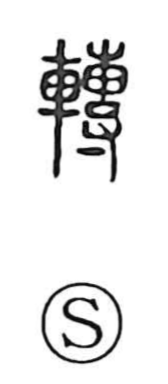

転

Kun: korogaru, korogeru, korogasu, korobu, mawaru, mawasu | On: ten
to turn ・ to roll ・ to revolve ・ to change ・ to shift
Explanation
転, formerly 轉, combines 車, a wheeled vehicle, with the sound element 專. 專 contains a sack whose contents are struck and compacted by a hand, 寸. The material is worked into a rounded form.
Something rounded can turn or roll easily. With 車, 轉 describes the wheel revolving and the vehicle moving as its wheels turn. From this come turning, rolling, and transport by wheeled movement.
The same change of position extends to circumstances. 転 can mean to shift, change, transfer, or come around to a different condition. Falling or tumbling is another kind of turn, where something loses its former upright position.